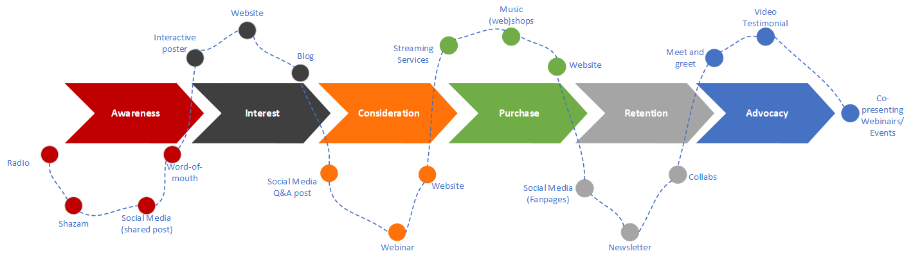
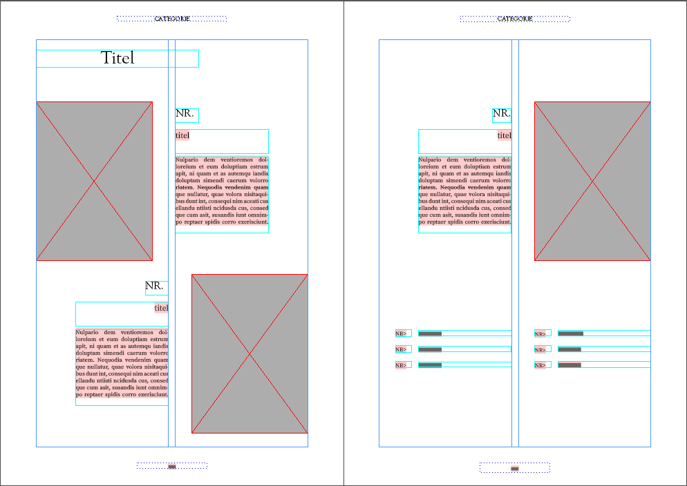
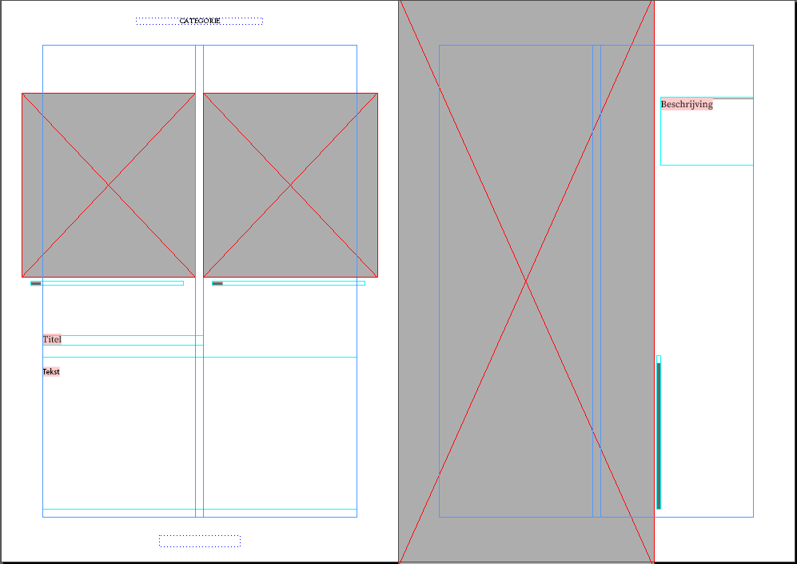

Sports
I like playing all kinds of sports. I've played tennis, squash, football and table tennis. I like watching it as well :)

This is a made up assignment. I wanted to do research on how some of the well-known Dutch artists became famous. I decided that I wanted to search for artists who share a genre simlilar to Noek's. These genres are Dutch pop & sing and songwriter music. In this assignment I described their styles and briefly explain how they got famous.
By making this assignment I have learned that artists from the genre Dutch pop/sing and songwriter, each have their own unique style and that most artists became famous after participating in tv-shows.
In this assignment I have taken a look at the current state of Noek's brand, analysed the industry in which the artist is active, the competition and her target audience.
By making this assignment I have created a full view of Noek's brand, analysed the market so that I now know useful strategies and know who the competition is so that I can adapt my strategy for Noek's branding to be able to outsmart the competition.
For this assignment I described the future customer journey of Noek's fans once my strategy becomes active.

For this assignment I looked for visuals that are commonly associated with eachother in terms of shape, content, structure, composition and color use.
I had trouble thinking of associations at first, but after some searching on the web I found them.
For this assignment I did some 'field research'. I visited to the World Press Photo exhibition in Eindhoven. Here I found some inspiring photos.
I loved reading the stories behind the photo's. Especially the ones that had topics that were also in the news I found interesting.
Before I made an appointment with the artist to do a photo shoot, I made this assignment to get inspired by famous photographers.
The search for inspiration definitely helped with doing our own photo shoot. Some props were brought in to make the photos more interesting. After the photoshoot, some photos were edited in a black-white filter with high contrast in an attempt to match Anton Corbijn's style. The photos have been kept simple since this suits Noek's core values.
For this assignment I created multiple typography posters. I tried making different kind of types of typography posters by using experimenting in Illustrator.
These posters were all made with Adobe Illustrator. Before beginning on the assignment I had very little experience using Illustrator so I started off experimenting with its tools first.
After I made my first design in Illustrator (see the first 'Typography' poster) I couldn't wait to make other ones. In my spare time I decided to play around with Illustrator a bit with the underlying image as result.

I would like to make more artwork in my spare time in the future. I have already seen a lot of awesome stuff others created for example, a live wallpaper theme of the game Dead By Daylight.
For this assignment I created personal logos for my friend, Finn de Koning. I based my logo design on his core values and characteristics.
Finn was very happy with the logos I made. I really liked doing this assignment, because I was free to make the logos for anyone.
In this assignment I made a band poster design. My theme is 'Wild Waters'. I wanted to put the artist in a different spotlight so I made the poster more 'wild'.

I had trouble getting the right material for this assignment, because we almost only made close ups from the artist during the photoshoot. I found a useful picture of the artist on Instagram, but the resolution was very low so I made sure to decrease the size of the image.
In this assignment I made a cover page in 'Vogue' style, a table of contents page and a normal magazine page for the artist.
 Using a grid really helped me out with the aligning. At first I thought it wouldn't be that helpful, but it turned out to be very helpful.
I enjoyed making designs and found creating strategies and researching the artist very interesting. As the end of the semester approached, I learned more and more. Especially in using the Adobe software I noticed my progress.

For this assignment I made a few basic Arduino exercises. I also did some research before starting on the excersises to see what kind of products you can make with Arduino.

An image slider that only needs HTML and Javascript code. By creating the two functions 'back' and 'next' the user is able to see a different picture each time they click one of the buttons.

Making an array of online images and creating functions that allow the user to navigate between the images.
I made buttons that show the contents of a .txt file and JSON data once clicked.
Using if else statements to display different text. I also learned how to fetch data and output this.
A map that shows the position of the ISS. I used data from the 'wheretheiss.at' API
to be able to use the latitude and longitude coordinates.
I used Leaflet.js to get an interactive map that
will visually show the position of the ISS to the user.
latitude: °
longitude: °
I learned how to fetch online data (from an API). I also learned how to use the data on a map with Leaflet.js.
I made an animation. The animation consists of two squares and a circle. The biggest square serves as a container for the smaller square and the smaller square serves as a container for the circle. The smallest square and circle move by using setInterval and if-else if statements.
I learned to move elements by using setInterval along with statements.
I made an image rotate itself.
If the image's value is larger than 359 degrees
the image's degrees value gets set back to 1 degree.
I used setTimeout so that if the image's value is larger than 359 degrees
the image starts rotating again from it's initial position.

I learned how to use setTimeout to rotate and reset an image's degrees value.
I made a small Weather Web App that includes multiple previously made POC's. I used:
I learned to combine multiple Javascript techniques into one product.
I made multiple grids. First I tried out grid by using text. I played around with the aligning, grid-templates and repeat function. After that I tried grid with images. I wanted the images to fit well inside their columns and rows, so I played around with the background-size properties.
Projectmanager
Projectlid
 De Artistic Exploration (briefing) en Team Charter hebben
we gezamenlijk gemaakt. Voor de Team Charter heb ik voorgesteld om ieder hun eigen regels en voorwaarden
toe te voegen. Nadat iedereen zijn regels en voorwaarden had opgesteld, is er gediscussieerd en
uiteindelijk is er een selectie gemaakt van de regels en voorwaarden waar we het allemaal mee eens
waren.
De Artistic Exploration (briefing) en Team Charter hebben
we gezamenlijk gemaakt. Voor de Team Charter heb ik voorgesteld om ieder hun eigen regels en voorwaarden
toe te voegen. Nadat iedereen zijn regels en voorwaarden had opgesteld, is er gediscussieerd en
uiteindelijk is er een selectie gemaakt van de regels en voorwaarden waar we het allemaal mee eens
waren. Aan het
begin van Sprint 2 heb ik 'meetings' gepland op iedere donderdagochtend om afspraken te maken en
eventuele vragen van projectleden te beantwoorden. Dit was nodig omdat niemand precies wist wat er
gedaan moest worden. Ook heb ik aan het begin van Sprint 2 voorgesteld het aantal media producten te
verminderen aangezien het te veel werk werd. Dit had te maken met de absentie van Vinz en het gebrek aan
motivatie van Wesley. Ik stelde voor alleen de meest noodzakelijke producten te realiseren. De meeste
belangrijke producten om de strategie te laten werken waren de website, interactieve poster, stage
design en de brand style guide. Verder heb ik nog het initiatief genomen om een briefing voor de photo
shoot op te stellen. Vervolgens heb ik een programma opgesteld voor de dag waarop de photo shoot zal
worden gehouden na het afspreken van een datum met de artiest. Hiervoor was de samenwerking en
communicatie met anderen groepen nodig. Aan het eind van sprint 2 ben ik meer als een 'projectlid' gaan
werken. Dit komt omdat er nog veel gedaan moest worden. Als projectmanager heb ik nog wel de presentatie
van Sprint 2 en 3 gehouden en heb ik constant vragen over de proftaak gesteld aan docenten zodat we als
groep wisten wat de bedoeling was.
Aan het
begin van Sprint 2 heb ik 'meetings' gepland op iedere donderdagochtend om afspraken te maken en
eventuele vragen van projectleden te beantwoorden. Dit was nodig omdat niemand precies wist wat er
gedaan moest worden. Ook heb ik aan het begin van Sprint 2 voorgesteld het aantal media producten te
verminderen aangezien het te veel werk werd. Dit had te maken met de absentie van Vinz en het gebrek aan
motivatie van Wesley. Ik stelde voor alleen de meest noodzakelijke producten te realiseren. De meeste
belangrijke producten om de strategie te laten werken waren de website, interactieve poster, stage
design en de brand style guide. Verder heb ik nog het initiatief genomen om een briefing voor de photo
shoot op te stellen. Vervolgens heb ik een programma opgesteld voor de dag waarop de photo shoot zal
worden gehouden na het afspreken van een datum met de artiest. Hiervoor was de samenwerking en
communicatie met anderen groepen nodig. Aan het eind van sprint 2 ben ik meer als een 'projectlid' gaan
werken. Dit komt omdat er nog veel gedaan moest worden. Als projectmanager heb ik nog wel de presentatie
van Sprint 2 en 3 gehouden en heb ik constant vragen over de proftaak gesteld aan docenten zodat we als
groep wisten wat de bedoeling was.

Met de onderstaande lijst toon ik dit leerdoel aan.
Planning maken
Taakverdeling opstellen
Pitchen/presenteren
Communicatie versterken (d.m.v. meetings en channels zoals Whatsapp)
Assistentie verlenen en feedback geven opdrachten projectleden

Met de onderstaande lijst toon ik dit leerdoel aan.
Eindverslag document gemaakt (Stan heeft een deel toegevoegd)
Planningen gemaakt
Taakverdeling helpen maken
MoSCow methode uitgevoerd deliverables
Geholpen met Artistic Exploration
Geholpen met Team Charters
Meeting documenten opstellen en invullen
Poster concepten en ontwerpen gemaakt, na het ontwerpen, poster getest en getracht te realiseren
Geholpen met stage design concepts te bedenken en visuals te verzamelen
Photoshoot documenten (briefing & set-up) opstellen
Geholpen met doelgroep te bepalen (interviews, persona, affinity map, etc.)
Geholpen met website maken
Presentatie Sprint 0 en Sprint 1 geholpen te maken
Presentatie Sprint 2 & 3 gemaakt
Ik heb geleerd duidelijker te communiceren,
niet alleen binnen de groep, maar ook met andere groepen (denk aan de photo shoot die niet helemaal
soepel verliep).
Verder heb ik geleerd hoe ik een artiest moet branden.
Research doen en contact onderhouden met de artiest zijn hierbij key factors.
Soms vond ik het onduidelijk wat er gedaan moest worden aangezien de artiest zelf ook niet wist wat ze
wilde.
Uiteindelijk ben ik erachter gekomen dat je als ICT & Media student met de wensen van de artiest
rekening moet houden, maar ook de artiest moet overtuigen van je expertise.
Ik heb veel nieuwe tools leren te gebruiken en geleerd feedback te verwerken van opdrachtgevers.
Ik had van te voren verwacht dat ieder groepje een andere artiest zou branden. Dit bleek niet zo te
zijn.
Ik kwam erachter dat het toch handig was dat meerdere groepjes dezeldfe artiest gingen branden, want zo
konden we elkaars werk vergelijken.
Ik vond het erg jammer dat het merendeel van de projectleden weinig motivatie hadden waardoor we
niet alle ontwerpen konden realiseren.
Ondanks dat het niet altijd mee zat, heb ik toch plezier gehad met dit project. Dit komt omdat ik veel
heb mogen experimenteren met originele media producten.
Ik vind dat de communicatie binnen de groep en naar andere groepen beter kon. Dit kwam o.a. doordat sommigen projectleden er niet altijd waren en dus weinig meekregen over het project. Een oplossing hiervoor om te voorkomen dat het nog een keer gebeurd, is het sturen van een bericht in Whatsapp. Zo wordt iedereen op de hoogte gebracht en kunnen gesprekken nagelezen worden. Ook moesten sommigen opdrachten met de hele groep gemaakt worden i.p.v. individueel. Hierdoor moesten sommigen meer werk verrichten dan anderen. Dit kwam vooral door de lage motivatie van sommige projectleden. Helaas heb ik de motivatie van deze projectleden niet kunnen verhogen.
I'm Rick van Wijk, a Dutch 18 year old student.
I study ICT & Media at Fontys Hogescholen in Eindhoven.
I'm very interested in computer technology, but that doesn't only mean programming.
I particularly enjoy making designs of all kinds.
Motion graphic design is something I would like to master when I have finished my study.

I like playing all kinds of sports. I've played tennis, squash, football and table tennis. I like watching it as well :)
I love listening to Hiphop, Dance,, Rock, Pop and Jazz!
Dead By Daylight, Fifa, Rocket League, The Forest, GTA or even an old-fashioned board game!
One of my absolute favorite movies is Harry Potter.
One of the many reasons why I like watching
Harry Potter over and over again,
is because of it's many awesome and great variety of effects.
That's why I decided to recreate some of the effects for this
personal project.
In this project I attempted to make templates and tutorials of
the Harry Potter effects I made in the Selfie Week project.
The tutorial was specially made for the-leaky-cauldron.org in the hope that they would post it on their website.
The video to the right was made to show my thought process and the end result of it.